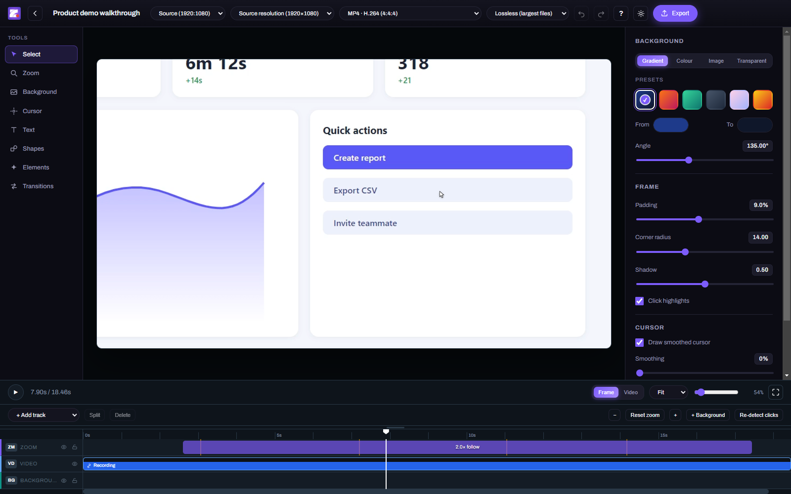
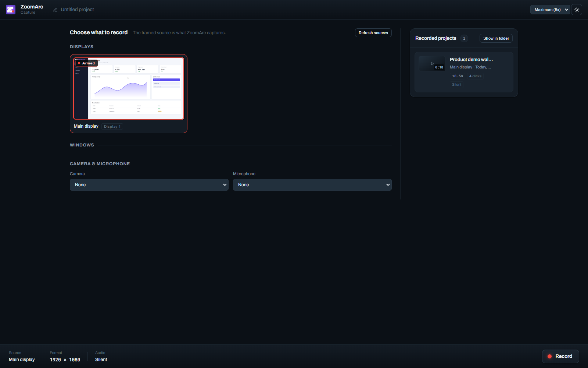
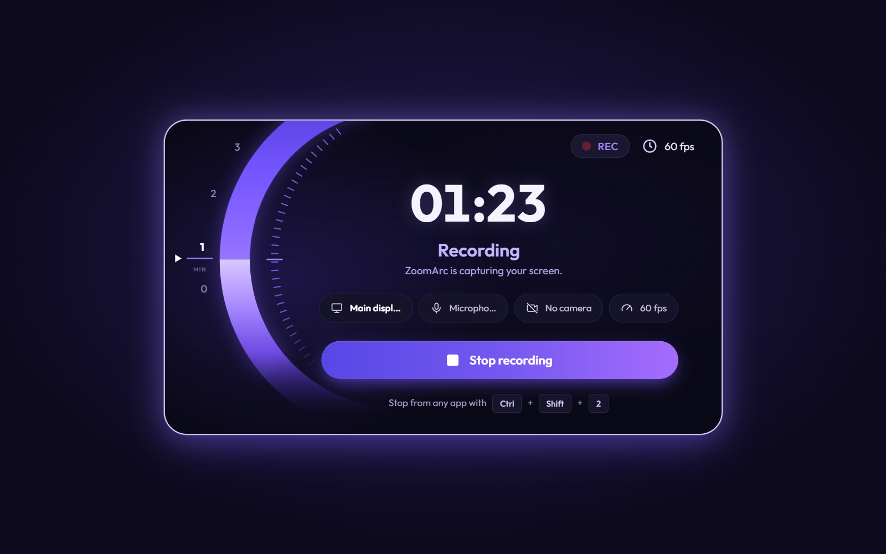
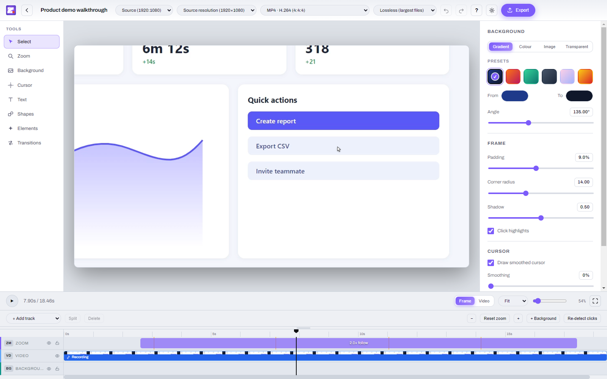
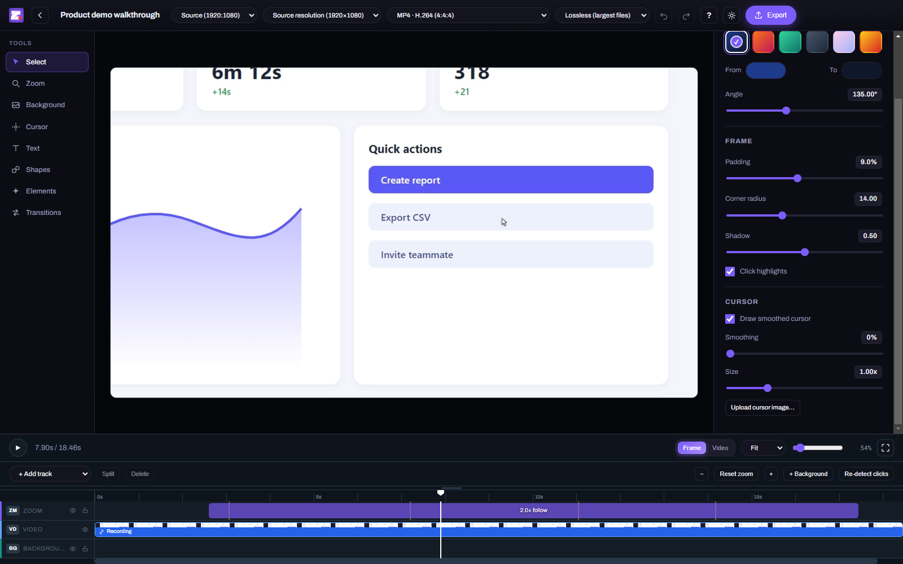
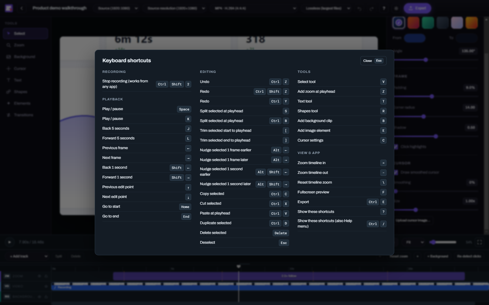
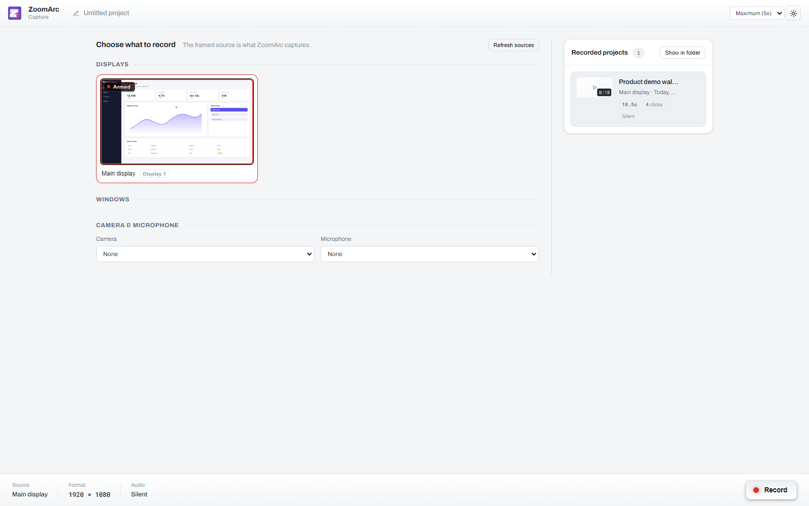

🎯
Automatic zoom on clicks
Every click becomes a smooth zoom. Nearby clicks are grouped into one zoom, and the camera follows your cursor until it settles.
ZoomArc records your screen at a true 60 fps, automatically zooms in on your clicks, follows your cursor with smooth camera motion, and lets you polish and export the video in one app. A Screen Studio–style recorder, built for Windows.

Record once — ZoomArc adds the zooms, keeps the cursor perfectly in sync and gives you a timeline to fine-tune the result.
Every click becomes a smooth zoom. Nearby clicks are grouped into one zoom, and the camera follows your cursor until it settles.
The real cursor is recorded 2,000 times a second on the same clock as the video and redrawn pixel-perfectly — resize it, smooth it or swap in your own.
Hardware H.264 capture straight from Windows Graphics Capture — smooth and in sync, even on 120 Hz and 144 Hz displays.
Trim, split and move clips; add backgrounds, padding, rounded corners, shadows, text, shapes and images. Nothing is re-encoded until export.
A movable, resizable webcam bubble and synced microphone audio for narrated walkthroughs.
MP4, MOV (ProRes 4444), WebM (incl. transparent), MKV and PNG — up to 4K, in 16:9, 9:16 vertical, 1:1 and more. Transparent backgrounds supported.
Edit at speed: split S, add zoom Z, undo Ctrl+Z, and press ? to see them all.
Recording, editing and exporting all happen locally. Nothing is uploaded.
From raw screen capture to a finished, zoomed-in demo in minutes.
Choose a display or a single window, plus an optional camera and microphone.
Demo as normal. Stop with the button or Ctrl+Shift+2 from any app.
The editor opens with zooms already placed around your clicks — adjust anything on the timeline.
Pick a format and aspect ratio for YouTube, Shorts, Reels, LinkedIn or your website.
The recorder, the live recording screen and the editor in dark and light themes.






Key facts about the current release.
| What it is | Screen recorder with automatic zoom and a built-in editor |
|---|---|
| Platform | Windows 10 (version 2004 / build 19041 or newer) and Windows 11, 64-bit |
| Latest version | 0.12.1 — release notes |
| Price | Free for personal and other non-commercial use (PolyForm Noncommercial 1.0.0) |
| Recording | Full screen or single window, true 60 fps, hardware H.264 |
| Cursor | Recorded as data at 2,000 samples/second, replayed 1:1 or smoothed, custom images |
| Export | MP4 (H.264), MOV (ProRes 4444), WebM (VP9, opaque or transparent), MKV (FFV1), PNG sequence — up to 4K |
| Download | Installer (ZoomArc.Setup.0.12.1.exe) or portable (ZoomArc.0.12.1.exe) from GitHub Releases |
Quick answers about ZoomArc. More in the full FAQ.
ZoomArc is a free screen recorder for Windows that automatically zooms in on your clicks and follows your cursor with smooth camera motion. It records your screen or a window at 60 fps, records the cursor separately so it can be restyled, and includes an editor for adjusting zooms and exporting the finished video.
Yes. ZoomArc is free for personal and other non-commercial use under the PolyForm Noncommercial License 1.0.0.
Yes. ZoomArc produces the same style of polished, zoom-on-click screen recordings with a smooth cursor, and it runs natively on Windows.
Yes. ZoomArc works on Windows 11 and on Windows 10 version 2004 (build 19041) or newer, 64-bit.
Yes. ZoomArc records a true 60 fps using hardware H.264 encoding, including on 120 Hz and 144 Hz displays.
ZoomArc detects your clicks, groups nearby clicks into one zoom, starts each zoom just before the click, follows your cursor while zoomed, and zooms back out once the cursor settles. Every zoom can be edited on the timeline.
MP4 (H.264), MOV (ProRes 4444 with transparency), WebM (VP9, including a transparent version), MKV (FFV1 lossless with transparency) and PNG sequence, at source resolution, 1080p, 1440p or 4K, in any aspect ratio including 9:16 vertical.
No. Recording, editing and exporting all happen locally on your computer.
Free for non-commercial use. Windows 10 and 11.
⬇ Download ZoomArc 0.12.1